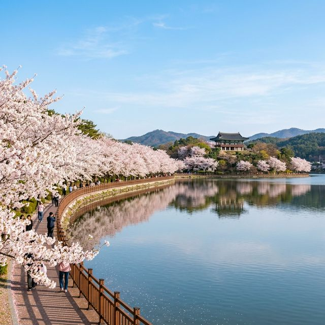
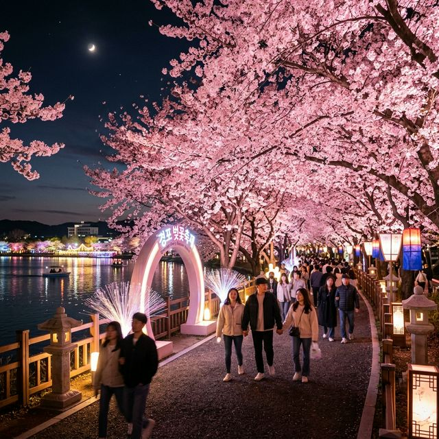
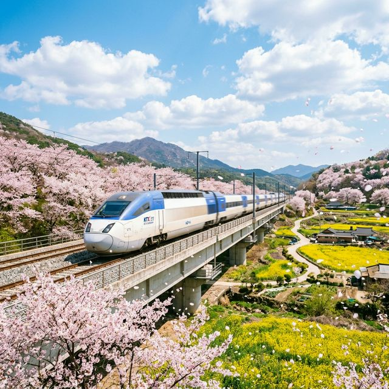

강릉의 봄이 마침내 깨어났습니다! 오늘(4월 1일) 오전 기준으로 경포호 주변 왕벚나무들이 수줍게 첫 꽃망울을 터뜨리기 시작했다는 소식입니다. 아직은 '만개'라고 하기엔 이른 상태지만, 이번 주 수요일부터 금요일까지 따뜻한 기온이 예보되어 있어 축제가 시작되는 이번 주말(4월 4일~5일)에는 사실상 절정을 맞이할 것으로 보입니다.
강릉 벚꽃의 매력은 뭐니 뭐니 해도 호수(湖)와 바다(海)가 공존하는 풍경이죠. 4.3km에 달하는 경포호 산책로를 따라 끝없이 이어진 벚꽃 터널을 걷다 보면, 불어오는 바닷바람에 흩날리는 꽃비(花雨)를 온몸으로 맞을 수 있습니다. 이번 포스팅에서는 주말에 강릉으로 향할 분들을 위해 실시간 개화 정보부터 주차 성공 전략, 그리고 KTX 마일리지 100% 환급 꿀팁까지 하나도 빠짐없이 정리해 드립니다.

강릉 경포호 — 호수 수면 위로 드리워진 분홍빛 벚꽃 터널의 장관
솔직히 말씀드리면, 지금 강릉은 "벚꽃이 다 핀 거 아냐?" 하고 기대하고 가시면 조금 실망하실 수 있습니다. 하지만 '개화 시작'이라는 건, 가장 생명력 있는 모습을 볼 수 있다는 뜻이기도 하죠. 나무 상단부터 꽃이 피기 시작했고, 일조량이 풍부한 경포 호수 남쪽 구간은 벌써 사진 찍기 좋을 만큼 분홍색이 돌기 시작했습니다.
만약 이번 주 평일(수~금)에 방문하신다면 '기다림의 미학'을 느끼실 것이고, 주말에 오신다면 '벚꽃의 폭격'을 맞게 되실 겁니다. 특히 올해는 축제 기간이 4월 4일부터 11일까지로 예년보다 조금 이르게 잡혔는데, 이는 기상청의 빠른 개화 예보를 지자체에서 적극 반영한 결과입니다. 결론부터 말씀드리면, 4월 4일(토) ~ 4월 8일(수) 사이가 이번 봄 최고의 방문 적기입니다.
| 장소 | 개화율 | 특이사항 |
|---|---|---|
| 경포호 산책로 | 20~30% | 나무 상단 위주 개화, 주말 만개 확실 |
| 경포대 정자 인근 | 10~20% | 고지대라 살짝 늦음, 이번 주말 최고조 |
| 강릉 남산공원 | 30~40% | 시내 쪽이라 개화 빠름, 현시점 사진 명당 |
| 교동 택지 거리 | 40% 이상 | 강릉 로컬 벚꽃 성지, 지금도 충분히 예쁨 |
단순히 꽃만 보는 게 아닙니다. 강릉시는 올해 축제를 준비하며 '경포 벚꽃 도둑을 잡아라'라는 독특한 컨셉의 이벤트를 마련했는데요. 축제장 곳곳에 숨겨진 벚꽃 조형물과 함께 미션을 수행하면 지역 특산품을 주는 재미있는 행사입니다. 아이들과 함께 오시는 가족 단위 여행객이라면 꼭 참여해 보세요.
오후 6시부터는 경포 습지광장 일대에 설치된 야간 조명이 켜지며 전혀 다른 세상이 열립니다. 특히 올해는 작년보다 조명 구간을 확대하여, 밤에도 호수 수면에 비친 벚꽃을 감상할 수 있도록 연출했습니다. '벚꽃 조명길'은 밤 10시까지 운영되니, 강릉에서 저녁 식사 후 느지막이 산책하는 동선을 강력 추천합니다.

라이트닝 터널 — 야간 조명이 꽃잎에 투영되어 신비로운 분위기를 자아냅니다.
강릉에는 경포 외에도 두 곳의 큰 벚꽃 축제가 더 있습니다.
1. 솔올 블라썸 (4/3~5): 교동 택지 일대 로컬 감성 축제
2. 남산 벚꽃 축제 (4/3~5): 강릉 시내를 내려다보는 남산공원 축제
이 세 곳을 모두 방문해 스탬프를 찍으면 기념품을 증정합니다. 경포호 인근만 보지 마시고, 시내권의 남산공원도 꼭 들러보세요. 남산공원은 계단식 지형에 벚꽃이 피어 있어 사진 구도가 훨씬 다채롭게 나옵니다.
경포 벚꽃 시즌의 최대 적은 바로 '교통'입니다. 주말 낮 2~3시경에 경포호 진입을 시도한다면 주차에만 2시간을 허비할 각오를 해야 합니다. 현지인들이 추천하는 가장 현명한 방법 두 가지를 알려드립니다.
축제 기간 시내 진입 정체를 피하기 위해 강릉 저류지 인근(강릉시 운정동 일원)에 대규모 임시 주차장이 마련됩니다. 여기서 축제장까지 무료 셔틀버스가 수시로 운행하니, 아예 호수 근처까지 차를 가져가지 않는 것이 정신 건강에 이롭습니다.
서울 거주자라면 자차보다는 KTX 강릉역행을 이용하세요. 강릉역과 축제장을 연결하는 임시 셔틀버스가 축제 기간 주말 내내 가동됩니다. 특히 오늘(4/1)부터 시작된 코레일 '여행가는 봄' 프로모션을 이용하면 교통비를 최대 50~100%까지 세이브할 수 있습니다.

KTX 여행 — 빠르고 쾌적하게 벚꽃 현장으로 이동하는 가장 현명한 선택
벚꽃 놀이도 장비빨입니다. 몇 가지만 챙겨도 훨씬 즐거운 여행이 됩니다.
📝 강릉 경포벚꽃축제 핵심 요약 (2026.04.04 ~ 04.11)
올해 강릉 벚꽃은 4월 1일 오늘 막 꽃을 피우기 시작했습니다. 다가오는 이번 주 첫 주말(4/4~5)이면 경포호 전체가 분홍빛 구름에 덮일 것으로 보입니다. 교통 정체가 걱정된다면 강릉 저류지
주차장 셔틀버스를, 서울에서 가신다면 KTX 환급 프로모션을 적극 활용하세요.
출처 및 참고: 강릉시 공식 관광 누리집 (gn.go.kr), 코레일 관광개발 '여행가는 봄' 안내문, 기상청 개화 예보 데이터
※ 본 포스팅의 개화 정보는 작성일 기준(4/1)이며, 기상 상황에 따라 실제 만개 시점은 차이가 날 수 있습니다. 방문 직전 강릉시 공식 SNS 채널을 한 번 더 확인하시길 권장합니다.
👉 함께 읽으면 좋은 글: 사실상 KTX 공짜 여행: 코레일 여행가는봄 KTX 100% 환급 정복
👉 함께 읽으면 좋은 글: 경주 대릉원 돌담길 벚꽃 2026 — 4월 3~5일 축제 완벽 가이드
#강릉여행 #경포벚꽃축제2026 #경포대벚꽃 #강릉벚꽃실시간 #강릉가볼만한곳 #경포호수 #벚꽃개화시기 #KTX환급 #여행가는봄 #강릉남산공원 #벚꽃축제 #강릉1박2일 #벚꽃명소 #강릉주차꿀팁 #솔올블라썸